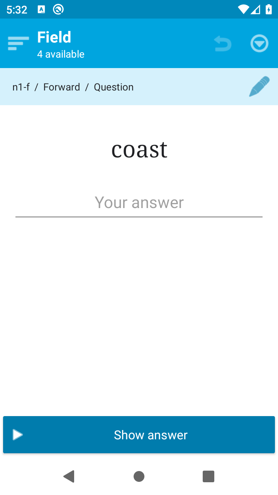
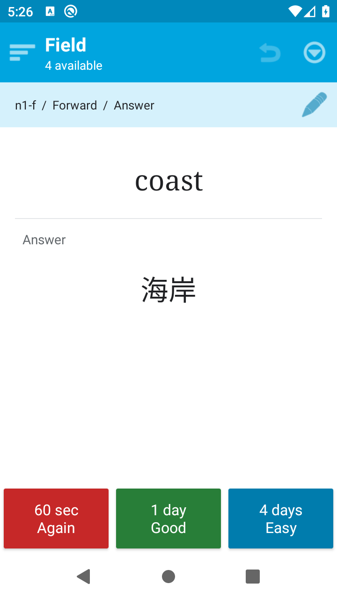
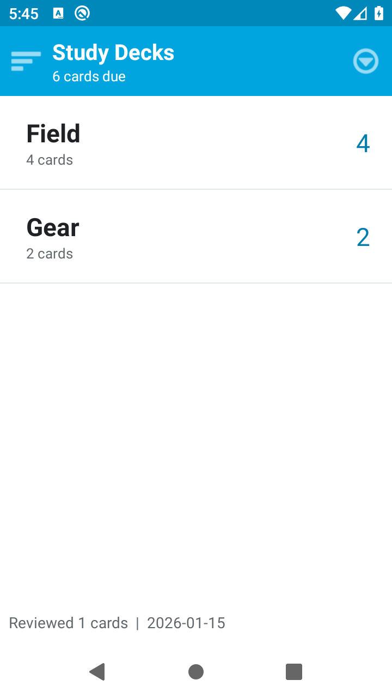
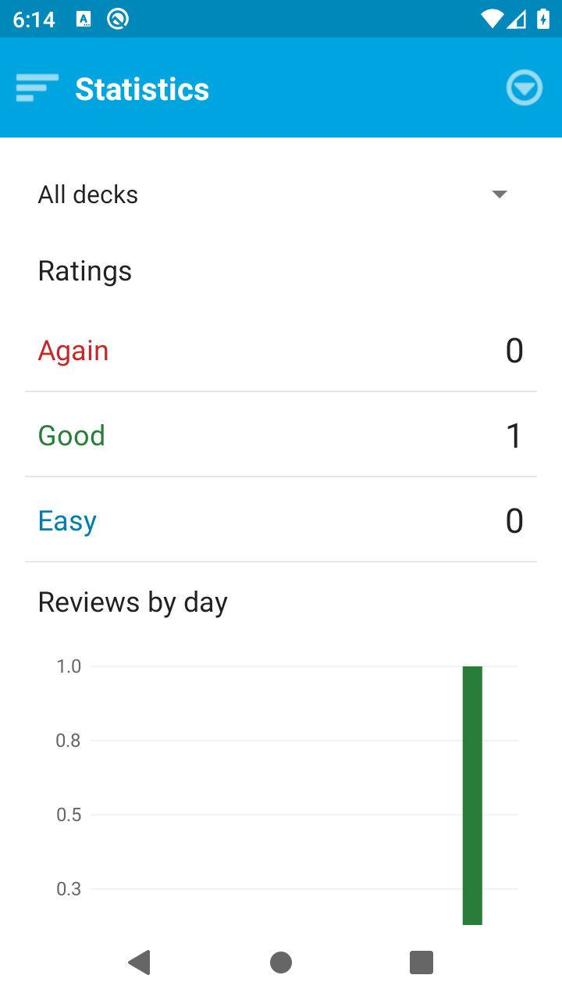
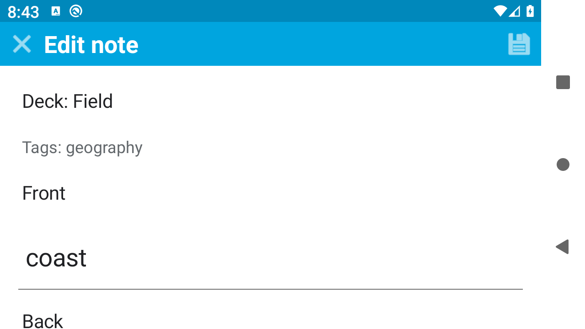
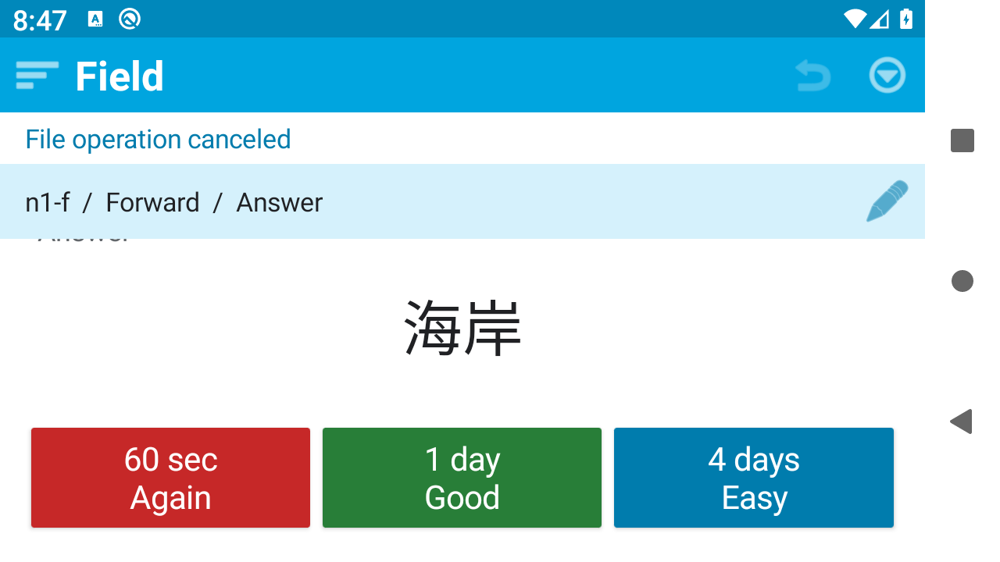
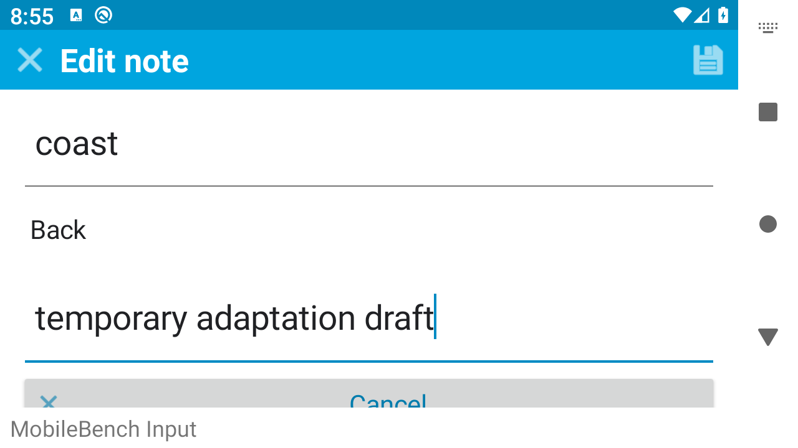
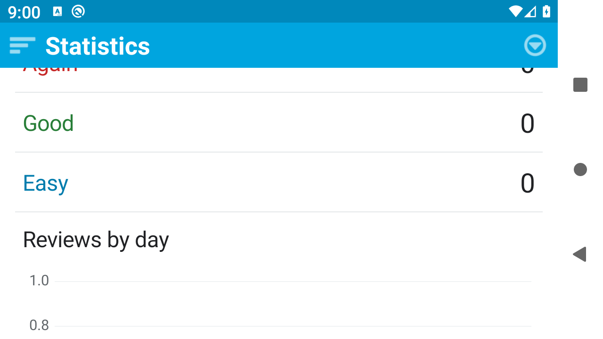

身份与批量更新
双向卡片共享笔记、排期独立；空白 TSV 保留原值，未知 ID 混合更新整批拒绝。同名笔记和 suspended 卡独立核对。
双向卡片、复习排期、撤销与公共 JSON 往返 · MCP-012
这是按公开题面生成的候选 App，并非官方 AnkiDroid。原候选 APK 在补充实际设备证据后通过限定合同验收，未进行人工代码修复。模型分阶段生成和设备执行批次不等于修复轮次；主要信息层级与适配通过，不代表高保真复刻或已证明长时任务难度。
双向卡片共享笔记、排期独立；空白 TSV 保留原值，未知 ID 混合更新整批拒绝。同名笔记和 suspended 卡独立核对。
Again +60、Good +86400、Easy +345600 秒；混合日志排序、只撤销最近评分、公共导出重建统计。
真实提交期间控件禁用，重复输入被拒绝且只产生一条 review；评分、撤销后直接终止进程再恢复。
系统选择器 JSON 导出恢复；五页信息层级、真实横屏与字体 1.3 操作，编辑取消和统计筛选滚动。
全部来自受验候选的真实设备运行，未使用官方参考图冒充；来源清单可下载。








| 编号 | 验收条件 | 结果 |
|---|---|---|
| R01-01 | fixture导入后note/card独立，双向共享内容而排期独立 | 通过 |
| R01-02 | 真实TSV按note_id更新，不重复卡、不重置due/review | 通过 |
| R01-03 | TSV空白字段保留原值 | 通过 |
| R01-04 | 未知ID整份TSV更新拒绝且数据不变 | 通过 |
| R02-01 | due<=业务时钟且未bury的计数与队列 | 通过 |
| R02-02 | suspended卡排除于可复习计数/队列 | 通过 |
| R02-03 | 按due再card_id升序 | 通过 |
| R02-04 | 业务时钟来自fixture并支持精确+60秒/+1天 | 通过 |
| R03-01 | 问面只有当前方向提示，未翻面不可评分 | 通过 |
| R03-02 | 翻面答案及三评分操作可达 | 通过 |
| R03-03 | 反向卡交换front/back | 通过 |
| R03-04 | 一次评分唯一review_id；207ms快速双击不重复 | 通过 |
| R03-05 | 提交未完成时重复点按不重复记数 | 通过 |
| R04-01 | Again due=clock+60且interval同步 | 通过 |
| R04-02 | Good due=clock+86400且interval同步 | 通过 |
| R04-03 | Easy due=clock+345600且interval同步 | 通过 |
| R04-04 | 统计从review日志重建各评分次数 | 通过 |
| R04-05 | 同note兄弟卡临时bury不改due；结束会话全部解除 | 通过 |
| R05-01 | 撤销最近评分删对应review、恢复due/interval/bury/原问面 | 通过 |
| R05-02 | 后续评分替换撤销栈顶，其余日志不变 | 通过 |
| R05-03 | 取消编辑不影响排期 | 通过 |
| R06-01 | 编辑保存共享双向文本、回问面、due/history不变 | 通过 |
| R06-02 | 返回牌组再进入按同队列规则，不用同标题作为ID | 通过 |
| R07-01 | 成功评分后force-stop恢复当前卡/面/bury/clock | 通过 |
| R07-02 | 撤销成功后force-stop恢复所有due及原问面 | 通过 |
| R07-03 | 编辑成功持久化且取消草稿丢弃 | 通过 |
| R07-04 | 答面旋转及force-stop仍同card/答面，不评分/抽卡 | 通过 |
| R08-01 | 系统选择器导出UTF-8 JSON包含七类公共字段并可恢复 | 通过 |
| R08-02 | reviews含review_id/card_id/rating/at/previous_due/new_due | 通过 |
| R08-03 | reviews按at再review_id排序 | 通过 |
| R08-04 | 统计与牌组计数可由公共导出重建 | 通过 |
| R09-01 | 问面阶段提示层级 | 通过 |
| R10-01 | 答面揭示与三评分区 | 通过 |
| R11-01 | 牌组与到期计数层级 | 通过 |
| R12-01 | 统计分类趋势层级 | 通过 |
| R13-01 | 笔记字段与保存入口层级 | 通过 |
| B01 | APK/源码/构建说明/自测交付 | 通过 |
| B02 | 核心控件可访问名称、列表身份/计数/状态可读 | 通过 |
| B03 | 真实横屏核心控件无遮挡且可操作 | 通过 |
| B04 | 字体1.3核心控件无遮挡且可操作 | 通过 |
| B05 | 旋转不得重复评分提交 | 通过 |
| T01-INIT | T01原始独立初态与恢复终态 | 通过 |
| T02-INIT | T02独立原始初态再Good→编辑/TSV/取消 | 通过 |
| T03-INIT | T03原始独立初态与导出恢复 | 通过 |
| T04-INIT | T04原始答面未评分初态、Again与60秒终态 | 通过 |
受验 APK SHA256：04589851c7e2158c746d3fd0231d185660e94f5b0c1aba73d518de1ef188ec17